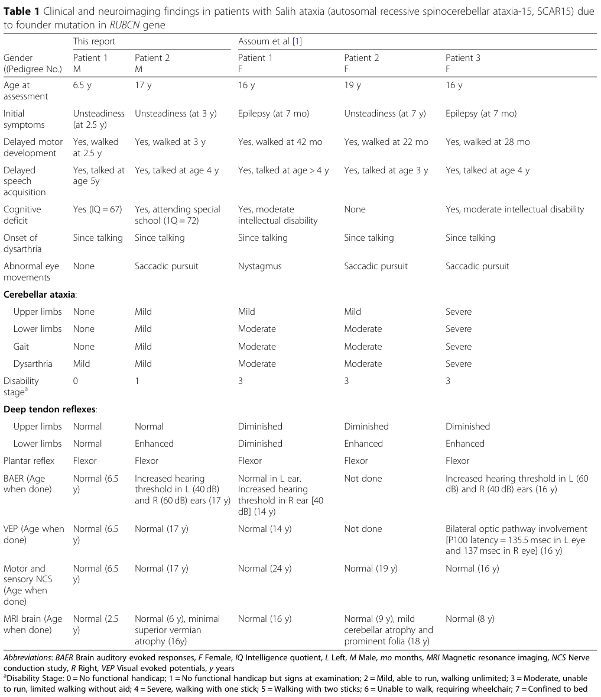

Autosomal recessive spinocerebellar ataxia 15 (SCAR15; Salih ataxia; OMIM 615705) is a childhood-onset RUBCN-related neurological disorder. The first two Saudi families shared a homozygous founder frameshift allele and showed delayed motor and speech development, dysarthria, and variable gait and limb ataxia. Intellectual disability and epilepsy are variable. Later reports describe dystonia and a severe epileptic encephalopathy. Cerebellar MRI can remain normal or show mild atrophy. Rubicon normally restrains macroautophagy through interactions involving its C-terminal Rubicon Homology (RH) domain and Rab7. The founder allele disrupts this domain and mislocalizes Rubicon in cultured cells; the downstream neuronal mechanism remains incompletely defined.
Ask a research question about Autosomal Recessive Spinocerebellar Ataxia 15. OpenScientist will conduct autonomous deep research using the Disorder Mechanisms Knowledge Base and PubMed literature (typically 10-30 minutes).
Do not include personal health information in your question. Questions and results are cached in your browser's local storage.
Conditions with similar clinical presentations that must be differentiated from Autosomal Recessive Spinocerebellar Ataxia 15:
name: Autosomal Recessive Spinocerebellar Ataxia 15
creation_date: '2026-08-05T00:00:00Z'
category: Mendelian
disease_term:
preferred_term: autosomal recessive spinocerebellar ataxia 15
term:
id: MONDO:0014311
label: autosomal recessive spinocerebellar ataxia 15
description: Autosomal recessive spinocerebellar ataxia 15 (SCAR15; Salih ataxia; OMIM 615705) is a childhood-onset RUBCN-related neurological disorder. The first two Saudi families shared a homozygous founder frameshift allele and showed delayed motor and speech development, dysarthria, and variable gait and limb ataxia. Intellectual disability and epilepsy are variable. Later reports describe dystonia and a severe epileptic encephalopathy. Cerebellar MRI can remain normal or show mild atrophy. Rubicon normally restrains macroautophagy through interactions involving its C-terminal Rubicon Homology (RH) domain and Rab7. The founder allele disrupts this domain and mislocalizes Rubicon in cultured cells; the downstream neuronal mechanism remains incompletely defined.
inheritance:
- name: Autosomal recessive inheritance
description: 'SCAR15 is inherited in an autosomal recessive manner. It was originally mapped by linkage / homozygosity mapping in a consanguineous Saudi Arabian pedigree, with affected individuals homozygous for a C-terminal RUBCN (KIAA0226) frameshift variant that cosegregated with disease; unaffected parents are heterozygous carriers. A shared ancient founder haplotype underlies the recurrent mutation in the Arabian Peninsula.
'
inheritance_term:
preferred_term: Autosomal recessive inheritance
term:
id: HP:0000007
label: Autosomal recessive inheritance
evidence:
- reference: PMID:20826435
reference_title: Rundataxin, a novel protein with RUN and diacylglycerol binding domains, is mutant in a new recessive ataxia.
supports: SUPPORT
evidence_source: HUMAN_CLINICAL
snippet: We have identified a novel form of recessive ataxia that segregates in three children of a large consanguineous Saudi Arabian family.
explanation: Establishes autosomal recessive inheritance segregating in a consanguineous pedigree.
- reference: PMID:32450808
reference_title: 'Ancient founder mutation in RUBCN: a second unrelated family confirms Salih ataxia (SCAR15).'
supports: SUPPORT
evidence_source: HUMAN_CLINICAL
snippet: Autozygome and exome analysis showed both affected have previously reported homoallelic mutation in RUBCN (NM_014687:exon18:c.2624delC:p.A875fs), whereas the parents are carriers.
explanation: Affected individuals are homozygous and parents are heterozygous carriers, consistent with autosomal recessive inheritance.
pathophysiology:
- name: Aberrant RUBCN Splicing
biological_scale: MOLECULAR
description: The homozygous c.2126+1G>A donor variant produces two abnormal transcripts without detectable reference transcript. Activation of an exonic splice site predominates over exon 14 skipping. Both transcripts predict frameshifted proteins lacking the RH domain; protein fate was not measured by the RNA assay.
evidence:
- reference: PMID:39520129
reference_title: A second RUBCN variant associated with epileptic encephalopathy and neurodevelopmental delay.
supports: SUPPORT
evidence_source: HUMAN_CLINICAL
snippet: 'Two alternative transcripts were expressed: a major transcript resulting from activation of an alternative exonic splice site and a minor transcript with skipping of exon 14.'
explanation: Direct RNA evidence distinguishes two splice products rather than assuming a single deleted exon.
downstream:
- target: Disruption of the Rubicon RH Region
description: Both abnormal transcripts predict a premature stop before the intact C-terminal RH domain.
causal_link_type: DIRECT
- name: Disruption of the Rubicon RH Region
biological_scale: MOLECULAR
description: Disease-associated frameshift and splice variants alter the C-terminal region involved in Rab7 binding. The founder allele replaces the native tail with a longer out-of-frame sequence rather than simply abolishing all Rubicon protein. Partial loss of function was considered in the founding paper. Later variants predict earlier truncation; direct functional evidence remains allele-specific.
genes:
- preferred_term: RUBCN
term:
id: hgnc:28991
label: RUBCN
evidence:
- reference: PMID:20826435
reference_title: Rundataxin, a novel protein with RUN and diacylglycerol binding domains, is mutant in a new recessive ataxia.
supports: SUPPORT
evidence_source: HUMAN_CLINICAL
snippet: Mutation screening of all coding sequences revealed a single nucleotide deletion, 2927delC, in exon 19 of the KIAA0226 gene, which results in a frame shift of the C-terminal domain (p.Ala943ValfsX146).
explanation: The original allele alters the C-terminal sequence; its historical numbering differs from the major-isoform nomenclature.
- reference: url:https://publication-theses.unistra.fr/public/theses_doctorat/2010/ASSOUM_Mirna_2010.pdf
reference_title: https://publication-theses.unistra.fr/public/theses_doctorat/2010/ASSOUM_Mirna_2010.pdf
supports: SUPPORT
evidence_source: HUMAN_CLINICAL
snippet: in the usage of a novel 145-amino-acid reading frame ... that is longer than the normal C-terminal sequence.
explanation: Quote from the 2010 Brain article (PMID:20826435), reproduced as Manuscript 5 in Mirna Assoum’s thesis. It explicitly predicts a longer alternative tail, contradicting complete-truncation shorthand.
downstream:
- target: Impaired Rubicon Endolysosomal Localization
description: The founder allele disrupts the C-terminal localization domain and mislocalizes expressed Rubicon in cultured cells.
causal_link_type: DIRECT
- target: Seizures
causal_link_type: INDIRECT_UNKNOWN_INTERMEDIATES
description: The clinical RUBCN-associated spectrum includes this manifestation, but the cellular and circuit intermediates linking the allele to this outcome remain unresolved.
- target: Intellectual disability
causal_link_type: INDIRECT_UNKNOWN_INTERMEDIATES
description: The clinical RUBCN-associated spectrum includes this manifestation, but the cellular and circuit intermediates linking the allele to this outcome remain unresolved.
- target: Neurodevelopmental delay
causal_link_type: INDIRECT_UNKNOWN_INTERMEDIATES
description: The clinical RUBCN-associated spectrum includes this manifestation, but the cellular and circuit intermediates linking the allele to this outcome remain unresolved.
- name: Impaired Rubicon Endolysosomal Localization
biological_scale: CELLULAR
description: The founder p.Ala875ValfsTer146 allele redistributes expressed Rubicon from Rab7- and LAMP1-positive compartments into the cytosol. The 2013 experiments used transfected COS-1 and HeLa cells. Patient fibroblast protein levels could not be assessed reproducibly with the available antibodies; the localization result is not a direct assay of patient neurons.
evidence:
- reference: PMID:23728897
reference_title: The Salih ataxia mutation impairs Rubicon endosomal localization.
supports: SUPPORT
evidence_source: IN_VITRO
snippet: The Salih ataxia mutation leads to a diffuse cytosolic distribution and mislocalized protein from the late endosomes, indicating that deletion of the diacylglycerol binding-like motif in the mutant protein interferes with normal Rubicon subcellular localization and confirming the pathogenicity of the mutation.
explanation: The disease-allele experiment demonstrates altered localization in cultured cells; downstream neuronal consequences remain unresolved.
downstream:
- target: Altered Rubicon-Dependent Autophagy Regulation
description: RH-region disruption may change Rubicon-mediated regulation; extrapolation from engineered interface mutants to the disease allele remains provisional.
causal_link_type: INDIRECT_UNKNOWN_INTERMEDIATES
- target: Cerebellar Dysfunction
description: The cellular defect is associated with the neurological disorder, but the intervening neuronal mechanisms are unresolved.
causal_link_type: INDIRECT_UNKNOWN_INTERMEDIATES
- name: Altered Rubicon-Dependent Autophagy Regulation
biological_scale: CELLULAR
mechanism_confidence: PROVISIONAL
description: Wild-type Rubicon restrains autophagic flux. Structural and engineered-mutant studies establish that RH-domain binding to Rab7-GTP supports this inhibitory function. In HeLa reporter cells, most tested interface mutants failed to suppress flux as wild-type overexpression did; A886D was an exception. The direction and magnitude of autophagy changes in SCAR15 neurons have not been established. A defect in LC3-associated phagocytosis is not demonstrated by these experiments. No causal link from this provisional autophagy alteration to a clinical outcome is asserted.
biological_processes:
- preferred_term: negative regulation of autophagy
term:
id: GO:0010507
label: negative regulation of autophagy
modifier: ABNORMAL
evidence:
- reference: PMID:32632011
reference_title: Structural basis for autophagy inhibition by the human Rubicon-Rab7 complex.
supports: SUPPORT
evidence_source: IN_VITRO
snippet: Rubicon-mediated inhibition of autophagy requires the interaction of the C-terminal Rubicon homology (RH) domain of Rubicon with Rab7-GTP.
explanation: Biochemical and cellular experiments establish the normal inhibitory role of this interaction; application to SCAR15 is an inference.
- reference: PMID:32632011
reference_title: Structural basis for autophagy inhibition by the human Rubicon-Rab7 complex.
supports: SUPPORT
evidence_source: IN_VITRO
snippet: Wild-type Rubicon overexpression increased the ratio relative to control cells, indicating suppression of autophagic flux.
explanation: The tandem fluorescent LC3 assay measures the effect of overexpressed Rubicon in HeLa cells, not neuronal flux in patients.
pdb_structures:
- pdb_id: 6WCW
resolution_angstrom: 2.8
method: X-ray diffraction
target_protein: Human Rubicon RH domain and Rab7
publication: PMID:32632011
description: A 2.8-Angstrom structure of the human Rubicon RH domain with GTP-bound Rab7. The crystallized constructs are Rubicon residues 699–949 and GTP-locked Rab7 Q67L residues 2–183; this is not a SCAR15 patient-variant complex.
- name: Cerebellar Dysfunction
biological_scale: TISSUE
description: Clinical ataxia and dysarthria demonstrate cerebellar dysfunction even when MRI is normal. Some patients later develop mild vermian or hemispheric atrophy, supporting a progressive structural component in a subset. Imaging does not demonstrate selective Purkinje-cell or granule-cell loss, and no such cellular attribution is made.
locations:
- preferred_term: cerebellum
term:
id: UBERON:0002037
label: cerebellum
evidence:
- reference: PMID:38934208
reference_title: 'Dystonia in a Patient with Genetically Proven Salih Ataxia Due to a Novel Truncating Variant: Expanding the Genotypic and Phenotypic Spectrum.'
supports: SUPPORT
evidence_source: HUMAN_CLINICAL
snippet: Cerebellar dysfunction was noted in the form of cerebellar dysarthria, bilateral upper limb dysmetria and left heel–knee incoordination and mild gait ataxia
explanation: The clinical examination demonstrates dysfunction in a patient whose cerebellum was normal on MRI.
- reference: PMID:32450808
reference_title: 'Ancient founder mutation in RUBCN: a second unrelated family confirms Salih ataxia (SCAR15).'
supports: SUPPORT
evidence_source: HUMAN_CLINICAL
snippet: Brain MRI showed normal cerebellar volume and folia in the older sibling at the age of 6 years, and revealed minimal superior vermian atrophy at the age of 16 years.
explanation: Serial imaging demonstrates mild structural progression in one patient, without histological cell-type resolution.
downstream:
- target: Gait ataxia
causal_link_type: INDIRECT_UNKNOWN_INTERMEDIATES
description: The clinical cerebellar syndrome includes this manifestation; the responsible neuronal populations and circuit abnormalities in SCAR15 remain unresolved.
- target: Limb ataxia
causal_link_type: INDIRECT_UNKNOWN_INTERMEDIATES
description: The clinical cerebellar syndrome includes this manifestation; the responsible neuronal populations and circuit abnormalities in SCAR15 remain unresolved.
- target: Dysarthria
causal_link_type: INDIRECT_UNKNOWN_INTERMEDIATES
description: The clinical cerebellar syndrome includes this manifestation; the responsible neuronal populations and circuit abnormalities in SCAR15 remain unresolved.
- target: Saccadic pursuit (impaired ocular smooth pursuit)
causal_link_type: INDIRECT_UNKNOWN_INTERMEDIATES
description: The clinical cerebellar syndrome includes this manifestation; the responsible neuronal populations and circuit abnormalities in SCAR15 remain unresolved.
- target: Nystagmus
causal_link_type: INDIRECT_UNKNOWN_INTERMEDIATES
description: The clinical cerebellar syndrome includes this manifestation; the responsible neuronal populations and circuit abnormalities in SCAR15 remain unresolved.
- target: Intention tremor
causal_link_type: INDIRECT_UNKNOWN_INTERMEDIATES
description: The clinical cerebellar syndrome includes this manifestation; the responsible neuronal populations and circuit abnormalities in SCAR15 remain unresolved.
phenotypes:
- name: Gait ataxia
description: Childhood gait unsteadiness and ataxia are prominent in the founder families, with variable severity and slow progression. The 2020 report describes unsteadiness in its younger patient but scores gait ataxia as absent in Table 1; this source inconsistency prevents a uniform case-frequency estimate.
phenotype_term:
preferred_term: Gait ataxia
term: &id002
id: HP:0002066
label: Gait ataxia
evidence:
- reference: PMID:20826435
reference_title: Rundataxin, a novel protein with RUN and diacylglycerol binding domains, is mutant in a new recessive ataxia.
supports: SUPPORT
evidence_source: HUMAN_CLINICAL
snippet: The three patients presented with childhood onset gait and limb ataxia, dysarthria and had limited walking without aid into their teenage years.
explanation: Documents childhood-onset gait ataxia with limited independent walking.
- name: Limb ataxia
description: Upper and lower limb ataxia varies from absent to severe across the five founder-allele patients tabulated in 2020.
phenotype_term:
preferred_term: Limb ataxia
term:
id: HP:0002070
label: Limb ataxia
evidence:
- reference: PMID:32450808
reference_title: 'Ancient founder mutation in RUBCN: a second unrelated family confirms Salih ataxia (SCAR15).'
supports: SUPPORT
evidence_source: HUMAN_CLINICAL
snippet: The older patient had saccadic eye movement, dysarthria, mild upper and lower limb and gait ataxia (on tandem walking), and enhanced reflexes in the lower limbs.
explanation: Documents upper and lower limb ataxia in an affected patient.
- name: Dysarthria
description: Cerebellar dysarthria.
phenotype_term:
preferred_term: Dysarthria
term: &id004
id: HP:0001260
label: Dysarthria
evidence:
- reference: PMID:20826435
reference_title: Rundataxin, a novel protein with RUN and diacylglycerol binding domains, is mutant in a new recessive ataxia.
supports: SUPPORT
evidence_source: HUMAN_CLINICAL
snippet: The three patients presented with childhood onset gait and limb ataxia, dysarthria and had limited walking without aid into their teenage years.
explanation: Dysarthria is present in the originally described patients.
- name: Intellectual disability
description: Intellectual disability is variable. Two founding-family patients had moderate disability and one had no cognitive deficit in the 2020 comparison table. The second family had measured IQ scores of 67 and 72; the latter was classified as borderline, not intellectual disability. Intellectual disability was also reported in the 2024 dystonia case.
phenotype_term:
preferred_term: Intellectual disability
term:
id: HP:0001249
label: Intellectual disability
evidence:
- reference: PMID:20826435
reference_title: Rundataxin, a novel protein with RUN and diacylglycerol binding domains, is mutant in a new recessive ataxia.
supports: SUPPORT
evidence_source: HUMAN_CLINICAL
snippet: Two patients developed epilepsy at 7 months without relapse after treatment, and mental retardation.
explanation: The founding report describes intellectual disability in two affected children; it is not an obligatory feature.
- reference: PMID:32450808
reference_title: 'Ancient founder mutation in RUBCN: a second unrelated family confirms Salih ataxia (SCAR15).'
supports: SUPPORT
evidence_source: HUMAN_CLINICAL
snippet: Cognitive abilities were mildly impaired in the younger sibling (IQ 67) and borderline in the older patient (IQ 72).
explanation: Measured cognitive performance distinguishes mild impairment from borderline function; the paper also describes the older sibling as moderately impaired in its history, so the measured result is retained explicitly.
- name: Seizures
description: Seizures occurred from seven months in two founding-family patients and responded to treatment; neither brother in the second family had seizures. The 2024 patient had recurrent, predominantly nocturnal generalized tonic-clonic seizures from age two, often associated with fever. A later splice-variant case had severe epileptic encephalopathy.
phenotype_term:
preferred_term: Seizure
term: &id001
id: HP:0001250
label: Seizure
evidence:
- reference: PMID:20826435
reference_title: Rundataxin, a novel protein with RUN and diacylglycerol binding domains, is mutant in a new recessive ataxia.
supports: SUPPORT
evidence_source: HUMAN_CLINICAL
snippet: Two patients developed epilepsy at 7 months without relapse after treatment, and mental retardation.
explanation: Documents infantile-onset epilepsy responsive to treatment.
- reference: PMID:38934208
reference_title: 'Dystonia in a Patient with Genetically Proven Salih Ataxia Due to a Novel Truncating Variant: Expanding the Genotypic and Phenotypic Spectrum.'
supports: SUPPORT
evidence_source: HUMAN_CLINICAL
snippet: He was noted to have generalized tonic–clonic seizures at the age of 2 years, which were predominantly nocturnal.
explanation: The later case establishes recurrence and a generalized tonic-clonic seizure phenotype, contrasting with the treated founding cases.
- name: Epileptic encephalopathy
description: 'Childhood-onset epileptic encephalopathy with neurodevelopmental delay reported in a patient with a novel RUBCN splice variant, broadening the phenotypic spectrum toward more severe epilepsy.
'
phenotype_term:
preferred_term: Epileptic encephalopathy
term:
id: HP:0200134
label: Epileptic encephalopathy
evidence:
- reference: PMID:39520129
reference_title: A second RUBCN variant associated with epileptic encephalopathy and neurodevelopmental delay.
supports: SUPPORT
evidence_source: HUMAN_CLINICAL
snippet: we describe a female patient with childhood-onset epileptic encephalopathy and neurodevelopmental delay carrying a novel homozygous variant in RUBCN
explanation: Reports epileptic encephalopathy in a RUBCN-mutant patient.
- name: Cerebellar atrophy
description: Mild cerebellar or superior vermian atrophy can emerge with age, but is not required for the clinical syndrome. Serial imaging showed normal cerebellar volume at six years and minimal superior vermian atrophy at sixteen in one founder-allele patient. The 20-year-old dystonia case had a normal cerebellum.
phenotype_term:
preferred_term: Cerebellar atrophy
term:
id: HP:0001272
label: Cerebellar atrophy
evidence:
- reference: PMID:32450808
reference_title: 'Ancient founder mutation in RUBCN: a second unrelated family confirms Salih ataxia (SCAR15).'
supports: SUPPORT
evidence_source: HUMAN_CLINICAL
snippet: Brain MRI showed normal cerebellar volume and folia in the older sibling at the age of 6 years, and revealed minimal superior vermian atrophy at the age of 16 years.
explanation: Documents superior vermian cerebellar atrophy on MRI.
- name: Lower limb hyperreflexia
description: Enhanced deep tendon reflexes in the lower limbs (pyramidal sign).
phenotype_term:
preferred_term: Lower limb hyperreflexia
term:
id: HP:0002395
label: Lower limb hyperreflexia
evidence:
- reference: PMID:32450808
reference_title: 'Ancient founder mutation in RUBCN: a second unrelated family confirms Salih ataxia (SCAR15).'
supports: SUPPORT
evidence_source: HUMAN_CLINICAL
snippet: and enhanced reflexes in the lower limbs
explanation: Documents lower-limb hyperreflexia in an affected patient.
- name: Saccadic pursuit (impaired ocular smooth pursuit)
description: 'Broken-up (saccadic) smooth pursuit on ocular examination — an impairment of smooth-pursuit eye movements, distinct from a primary saccade abnormality.
'
phenotype_term:
preferred_term: Saccadic pursuit
term:
id: HP:0000617
label: Abnormality of ocular smooth pursuit
evidence:
- reference: PMID:32450808
reference_title: 'Ancient founder mutation in RUBCN: a second unrelated family confirms Salih ataxia (SCAR15).'
supports: SUPPORT
evidence_source: HUMAN_CLINICAL
snippet: ocular examination revealed saccadic pursuit
explanation: Documents saccadic (interrupted) smooth pursuit, an ocular smooth-pursuit abnormality.
- name: Nystagmus
description: Nystagmus reported among the oculomotor abnormalities, emerging in older patients.
phenotype_term:
preferred_term: Nystagmus
term:
id: HP:0000639
label: Nystagmus
evidence:
- reference: PMID:32450808
reference_title: 'Ancient founder mutation in RUBCN: a second unrelated family confirms Salih ataxia (SCAR15).'
supports: SUPPORT
evidence_source: HUMAN_CLINICAL
snippet: nystagmus or saccadic pursuit (in the second decade)
explanation: Documents nystagmus among the oculomotor findings, developing in the second decade.
- name: Hearing impairment
description: Elevated auditory evoked-response thresholds were reported in three of four tested founder-allele patients in the 2020 comparison table. The report does not establish a sensorineural lesion from these thresholds alone; testing was normal in the fourth patient.
phenotype_term:
preferred_term: Hearing impairment
term:
id: HP:0000365
label: Hearing impairment
evidence:
- reference: PMID:32450808
reference_title: 'Ancient founder mutation in RUBCN: a second unrelated family confirms Salih ataxia (SCAR15).'
supports: SUPPORT
evidence_source: HUMAN_CLINICAL
snippet: brain auditory evoked response (BAER) revealed increased hearing threshold in left (40 dB) and right (60 dB) ears
explanation: Documents an increased auditory threshold (hearing impairment) on BAER in an affected patient.
- name: Motor delay
description: Delayed acquisition of motor milestones, e.g. delayed independent walking.
phenotype_term:
preferred_term: Motor delay
term:
id: HP:0001270
label: Motor delay
evidence:
- reference: PMID:32450808
reference_title: 'Ancient founder mutation in RUBCN: a second unrelated family confirms Salih ataxia (SCAR15).'
supports: SUPPORT
evidence_source: HUMAN_CLINICAL
snippet: He sat unsupported at 1 year, walked at 30 months and showed unsteadiness since starting to walk.
explanation: Documents delayed gross-motor milestones (walking at 30 months).
- name: Delayed speech and language development
description: Delayed speech acquisition.
phenotype_term:
preferred_term: Delayed speech and language development
term:
id: HP:0000750
label: Delayed speech and language development
evidence:
- reference: PMID:32450808
reference_title: 'Ancient founder mutation in RUBCN: a second unrelated family confirms Salih ataxia (SCAR15).'
supports: SUPPORT
evidence_source: HUMAN_CLINICAL
snippet: Speech acquisition was delayed till 5 years.
explanation: Documents delayed speech and language development.
- name: Dystonia
description: The 2024 patient had dystonia of both hands and feet, jerky dystonic tremor, and truncal and facial involvement. Dystonia increased during posture and activities such as writing and walking. These findings are from one patient with homozygous p.Gln748HisfsTer48.
phenotype_term:
preferred_term: Dystonia
term:
id: HP:0001332
label: Dystonia
evidence:
- reference: PMID:38934208
reference_title: 'Dystonia in a Patient with Genetically Proven Salih Ataxia Due to a Novel Truncating Variant: Expanding the Genotypic and Phenotypic Spectrum.'
supports: SUPPORT
evidence_source: HUMAN_CLINICAL
snippet: Dystonia was noted in both the hands and feet with jerky dystonic tremors and intention tremors.
explanation: The full clinical examination directly documents dystonia and associated tremor.
- name: Exotropia
description: Alternating exotropia was reported in the single 2024 patient with dystonia.
phenotype_term:
preferred_term: Exotropia
term:
id: HP:0000577
label: Exotropia
evidence:
- reference: PMID:38934208
reference_title: 'Dystonia in a Patient with Genetically Proven Salih Ataxia Due to a Novel Truncating Variant: Expanding the Genotypic and Phenotypic Spectrum.'
supports: SUPPORT
evidence_source: HUMAN_CLINICAL
snippet: On examination, he had alternating exotropia
explanation: The examination directly identifies outward ocular deviation.
- name: Lower limb spasticity
description: Bilateral lower-limb spasticity accompanied generalized hyperreflexia in the 2024 case.
phenotype_term:
preferred_term: Lower limb spasticity
term:
id: HP:0002061
label: Lower limb spasticity
evidence:
- reference: PMID:38934208
reference_title: 'Dystonia in a Patient with Genetically Proven Salih Ataxia Due to a Novel Truncating Variant: Expanding the Genotypic and Phenotypic Spectrum.'
supports: SUPPORT
evidence_source: HUMAN_CLINICAL
snippet: There was spasticity in both lower limbs, generalized hyperreflexia with bilateral flexor plantar responses.
explanation: Documents spasticity without an extensor plantar response.
- name: Intention tremor
description: Intention tremor coexisted with dystonic tremor in the 2024 case.
phenotype_term:
preferred_term: Intention tremor
term:
id: HP:0002080
label: Intention tremor
evidence:
- reference: PMID:38934208
reference_title: 'Dystonia in a Patient with Genetically Proven Salih Ataxia Due to a Novel Truncating Variant: Expanding the Genotypic and Phenotypic Spectrum.'
supports: SUPPORT
evidence_source: HUMAN_CLINICAL
snippet: Dystonia was noted in both the hands and feet with jerky dystonic tremors and intention tremors.
explanation: The examination distinguishes intention tremor from the associated dystonic component.
- name: Decreased distal sensory nerve action potential
description: Bilateral sural sensory responses were absent in the 2024 case. Absent sural responses also appear in the original 2010 supplementary table, although the 2020 retrospective table summarizes earlier nerve studies as normal. This electrophysiological finding does not by itself establish a generalized sensorimotor neuropathy.
phenotype_term:
preferred_term: Decreased distal sensory nerve action potential
term:
id: HP:0007230
label: Decreased distal sensory nerve action potential
evidence:
- reference: PMID:38934208
reference_title: 'Dystonia in a Patient with Genetically Proven Salih Ataxia Due to a Novel Truncating Variant: Expanding the Genotypic and Phenotypic Spectrum.'
supports: SUPPORT
evidence_source: HUMAN_CLINICAL
snippet: Bilateral sural sensory nerve action potential was absent.
explanation: Records the nerve conduction result rather than inferring a broader neuropathy syndrome.
- name: Epileptic spasm
description: One founding-family patient had infantile spasms with flexion of the head and limbs, often after waking, starting at seven months.
phenotype_term:
preferred_term: Epileptic spasm
term: &id003
id: HP:0011097
label: Epileptic spasm
evidence:
- reference: url:https://publication-theses.unistra.fr/public/theses_doctorat/2010/ASSOUM_Mirna_2010.pdf
reference_title: https://publication-theses.unistra.fr/public/theses_doctorat/2010/ASSOUM_Mirna_2010.pdf
supports: SUPPORT
evidence_source: HUMAN_CLINICAL
snippet: A clinical diagnosis of infantile spasm was made and she received vigabatrin. Clonazepam was added because she continued to have daily seizures.
explanation: Quote from the 2010 Brain article (PMID:20826435), reproduced as Manuscript 5 in Mirna Assoum’s thesis. The clinical narrative documents this seizure type and its treatment.
- name: Myoclonic seizure
description: The first founding-family patient had multiple daily myoclonic jerks at seizure onset. Their distribution was not sufficiently described to require a generalized-onset term.
phenotype_term:
preferred_term: Myoclonic seizure
term:
id: HP:0032794
label: Myoclonic seizure
evidence:
- reference: url:https://publication-theses.unistra.fr/public/theses_doctorat/2010/ASSOUM_Mirna_2010.pdf
reference_title: https://publication-theses.unistra.fr/public/theses_doctorat/2010/ASSOUM_Mirna_2010.pdf
supports: SUPPORT
evidence_source: HUMAN_CLINICAL
snippet: In Patient 1, the convulsions started in the form of 5–7 myoclonic jerks per day.
explanation: Quote from the 2010 Brain article (PMID:20826435), reproduced as Manuscript 5 in Mirna Assoum’s thesis. Documents the myoclonic presentation in one patient without deriving a population frequency.
- name: Hyporeflexia
description: The three founding-family patients had diminished upper-limb tendon reflexes; one also had diminished lower-limb reflexes. Other patients have lower-limb hyperreflexia or normal reflexes, so these are variable findings rather than mutually exclusive disease subtypes.
phenotype_term:
preferred_term: Hyporeflexia
term:
id: HP:0001265
label: Hyporeflexia
evidence:
- reference: url:https://publication-theses.unistra.fr/public/theses_doctorat/2010/ASSOUM_Mirna_2010.pdf
reference_title: https://publication-theses.unistra.fr/public/theses_doctorat/2010/ASSOUM_Mirna_2010.pdf
supports: SUPPORT
evidence_source: HUMAN_CLINICAL
snippet: Patient 1 has diminished deep tendon reflexes in both upper and lower limbs while the other two have diminished reflexes only in the upper limbs.
explanation: Quote from the 2010 Brain article (PMID:20826435), reproduced as Manuscript 5 in Mirna Assoum’s thesis. The original clinical narrative specifies the distribution of reduced reflexes.
- name: Abnormal visual evoked potentials
description: One founding-family patient had delayed P100 responses interpreted as bilateral optic-pathway involvement at sixteen years. This electrophysiological finding does not establish optic atrophy. Other tested patients had normal responses.
phenotype_term:
preferred_term: Abnormal visual evoked potentials
term:
id: HP:0000649
label: Abnormality of visual evoked potentials
evidence:
- reference: PMID:32450808
reference_title: 'Ancient founder mutation in RUBCN: a second unrelated family confirms Salih ataxia (SCAR15).'
supports: SUPPORT
evidence_source: HUMAN_CLINICAL
snippet: Bilateral optic pathway involvement ... P100 latency = 135.5 msec in L eye and 137 msec in R eye
explanation: The retrospective clinical table reports an abnormal visual evoked response; structural optic-nerve damage is not inferred.
- name: Neurodevelopmental delay
description: The splice-variant case expands the phenotype to childhood-onset epileptic encephalopathy with neurodevelopmental delay. Motor and speech delays are separately documented in the founder families.
phenotype_term:
preferred_term: Neurodevelopmental delay
term:
id: HP:0012758
label: Neurodevelopmental delay
evidence:
- reference: PMID:39520129
reference_title: A second RUBCN variant associated with epileptic encephalopathy and neurodevelopmental delay.
supports: SUPPORT
evidence_source: HUMAN_CLINICAL
snippet: we describe a female patient with childhood-onset epileptic encephalopathy and neurodevelopmental delay carrying a novel homozygous variant in RUBCN
explanation: The patient-level report supports a broader developmental phenotype alongside epilepsy.
genetic:
- name: RUBCN
notes: Biallelic RUBCN variants cause SCAR15. The recurrent founder allele c.2624delC (p.Ala875ValfsTer146) was reported with older numbering as 2927delC/p.Ala943ValfsX146. It alters the native C-terminal RH region; a frameshift does not itself demonstrate complete protein absence. Additional clinically reported alleles include c.2244delG (p.Gln748HisfsTer48) and the splice donor c.2126+1G>A. Transcript versions and original nomenclature are retained in individual variant descriptions.
gene_term:
preferred_term: RUBCN
term:
id: hgnc:28991
label: RUBCN
relationship_type: CAUSATIVE
variants:
- name: RUBCN c.2624delC (p.Ala875ValfsX146)
description: Founder frameshift deletion reported in two Saudi families as NM_014687:c.2624delC (p.A875fs; p.Ala875ValfsTer146). Historical 2927delC/p.Ala943ValfsX146 numbering refers to the same reported family allele. The frameshift disrupts the native C-terminal RH region and cultured-cell localization; it should not be described as complete Rubicon absence.
type: frameshift
clinical_significance: PATHOGENIC
regulatory_category: LOF
evidence:
- reference: PMID:32450808
reference_title: 'Ancient founder mutation in RUBCN: a second unrelated family confirms Salih ataxia (SCAR15).'
supports: SUPPORT
evidence_source: HUMAN_CLINICAL
snippet: Autozygome and exome analysis showed both affected have previously reported homoallelic mutation in RUBCN (NM_014687:exon18:c.2624delC:p.A875fs), whereas the parents are carriers.
explanation: Establishes the homozygous founder frameshift allele in a second family.
- reference: url:https://publication-theses.unistra.fr/public/theses_doctorat/2010/ASSOUM_Mirna_2010.pdf
reference_title: https://publication-theses.unistra.fr/public/theses_doctorat/2010/ASSOUM_Mirna_2010.pdf
supports: SUPPORT
evidence_source: HUMAN_CLINICAL
snippet: it is possible that loss of function is only partial, with some residual function maintained by the mutant protein
explanation: Quote from the 2010 Brain article (PMID:20826435), reproduced as Manuscript 5 in Mirna Assoum’s thesis. The founding report explicitly considered residual function; complete null status should not be assumed.
- name: RUBCN c.2126+1G>A (splice donor)
description: 'Homozygous NM_014687.3:c.2126+1G>A was reported in a child with epileptic encephalopathy and neurodevelopmental delay. RNA analysis found no reference transcript and two alternative transcripts: predominant activation of an exonic splice site and less abundant exon 14 skipping. Both predict a frameshift and premature stop codon; protein abundance, Rab7 binding, and localization were not directly established by this RNA result.'
type: splice site
clinical_significance: PATHOGENIC
regulatory_category: LOF
evidence:
- reference: PMID:39520129
reference_title: A second RUBCN variant associated with epileptic encephalopathy and neurodevelopmental delay.
supports: SUPPORT
evidence_source: HUMAN_CLINICAL
snippet: A functional study of the RNA revealed that this variant completely abolishes the consensus donor site at the exon 14/intron 14 junction, resulting in the absence of expression of the reference transcript.
explanation: RNA analysis directly supports abnormal splicing; protein-domain loss and trafficking effects are downstream predictions.
- name: RUBCN c.2244delG (p.Gln748HisfsTer48)
description: Homozygous NM_014687.4:c.2244delG in the 2024 patient with ataxia, dystonia, epilepsy, intellectual disability and absent sural sensory responses. The authors classified it as likely pathogenic using PVS1 and PM2; the report does not provide a functional protein assay.
type: frameshift
clinical_significance: LIKELY_PATHOGENIC
regulatory_category: LOF
evidence:
- reference: PMID:38934208
reference_title: 'Dystonia in a Patient with Genetically Proven Salih Ataxia Due to a Novel Truncating Variant: Expanding the Genotypic and Phenotypic Spectrum.'
supports: SUPPORT
evidence_source: HUMAN_CLINICAL
snippet: that results in a frameshift and premature truncation of the protein 48 amino acids downstream to codon 748 (p.Gln748HisfsTer48).
explanation: The sequenced allele predicts a frameshift and premature termination; the full case report identifies it as NM_014687.4:c.2244delG.
- reference: PMID:38934208
reference_title: 'Dystonia in a Patient with Genetically Proven Salih Ataxia Due to a Novel Truncating Variant: Expanding the Genotypic and Phenotypic Spectrum.'
supports: SUPPORT
evidence_source: HUMAN_CLINICAL
snippet: the variant was classified as likely pathogenic as per ACMG guidelines (PVS1, PM2)
explanation: Records the publication-specific classification without upgrading it to pathogenic.
evidence:
- reference: PMID:20826435
reference_title: Rundataxin, a novel protein with RUN and diacylglycerol binding domains, is mutant in a new recessive ataxia.
supports: SUPPORT
evidence_source: HUMAN_CLINICAL
snippet: Mutation screening of all coding sequences revealed a single nucleotide deletion, 2927delC, in exon 19 of the KIAA0226 gene, which results in a frame shift of the C-terminal domain (p.Ala943ValfsX146).
explanation: Identifies the causative KIAA0226 (RUBCN) C-terminal frameshift variant.
- reference: PMID:32450808
reference_title: 'Ancient founder mutation in RUBCN: a second unrelated family confirms Salih ataxia (SCAR15).'
supports: SUPPORT
evidence_source: HUMAN_CLINICAL
snippet: Autozygome and exome analysis showed both affected have previously reported homoallelic mutation in RUBCN (NM_014687:exon18:c.2624delC:p.A875fs), whereas the parents are carriers.
explanation: Confirms the recurrent homozygous RUBCN founder mutation in a second family.
diagnosis:
- name: Molecular Genetic Testing
description: Molecular diagnosis relies on biallelic pathogenic or likely pathogenic RUBCN variants consistent with the phenotype and inheritance. Autozygome-assisted exome sequencing identified the founder allele in the second family; exome sequencing identified the 2024 frameshift. Normal MRI or nerve conduction in some cases does not exclude the disorder. Bilateral sural sensory responses were absent in the 2024 patient. The original 2010 supplementary table also reports absent sural responses in two patients, whereas the 2020 retrospective table summarizes those studies as normal; these discrepant source summaries should not be treated as proof of universal absence of neuropathy.
evidence:
- reference: PMID:32450808
reference_title: 'Ancient founder mutation in RUBCN: a second unrelated family confirms Salih ataxia (SCAR15).'
supports: SUPPORT
evidence_source: HUMAN_CLINICAL
snippet: Autozygome and exome analysis showed both affected have previously reported homoallelic mutation in RUBCN (NM_014687:exon18:c.2624delC:p.A875fs), whereas the parents are carriers.
explanation: Molecular diagnosis is achieved by autozygome/exome analysis identifying biallelic RUBCN variants.
- reference: PMID:32450808
reference_title: 'Ancient founder mutation in RUBCN: a second unrelated family confirms Salih ataxia (SCAR15).'
supports: SUPPORT
evidence_source: HUMAN_CLINICAL
snippet: Nerve conduction studies were normal in both patients.
explanation: Normal nerve conduction was observed in these two brothers; it is a cohort observation, not a diagnostic requirement.
- reference: PMID:38934208
reference_title: 'Dystonia in a Patient with Genetically Proven Salih Ataxia Due to a Novel Truncating Variant: Expanding the Genotypic and Phenotypic Spectrum.'
supports: SUPPORT
evidence_source: HUMAN_CLINICAL
snippet: Bilateral sural sensory nerve action potential was absent.
explanation: The later case contradicts a universal requirement for normal peripheral nerve conduction.
- name: Brain MRI
description: Imaging evaluates cerebellar morphology and other abnormalities. A normal cerebellum is compatible with clinically evident SCAR15. The 2024 patient had left hippocampal changes and medial temporal sclerosis, whose relation to the underlying genotype versus epilepsy is unresolved.
evidence:
- reference: PMID:38934208
reference_title: 'Dystonia in a Patient with Genetically Proven Salih Ataxia Due to a Novel Truncating Variant: Expanding the Genotypic and Phenotypic Spectrum.'
supports: SUPPORT
evidence_source: HUMAN_CLINICAL
snippet: Magnetic resonance imaging of the brain revealed reduced interdigitation in the left hippocampus and medial temporal sclerosis with normal cerebellum
explanation: Records the observed MRI findings without attributing hippocampal injury specifically to RUBCN loss.
- name: RNA analysis for a candidate splice variant
description: RNA from the splice-variant patient demonstrated loss of the reference transcript and two alternative splice products. Such functional testing can clarify a candidate splice effect; it does not directly establish protein abundance or neuronal trafficking.
evidence:
- reference: PMID:39520129
reference_title: A second RUBCN variant associated with epileptic encephalopathy and neurodevelopmental delay.
supports: SUPPORT
evidence_source: HUMAN_CLINICAL
snippet: A functional study of the RNA revealed that this variant completely abolishes the consensus donor site at the exon 14/intron 14 junction, resulting in the absence of expression of the reference transcript.
explanation: RNA analysis functionally characterized the reported splice-donor allele.
- name: Electroencephalography
description: EEG characterized the seizure phenotype in the founding patients, including multifocal or generalized and focal epileptiform discharges. EEG findings and seizure severity vary across reported patients.
evidence:
- reference: url:https://publication-theses.unistra.fr/public/theses_doctorat/2010/ASSOUM_Mirna_2010.pdf
reference_title: https://publication-theses.unistra.fr/public/theses_doctorat/2010/ASSOUM_Mirna_2010.pdf
supports: SUPPORT
evidence_source: HUMAN_CLINICAL
snippet: An EEG showed frequent discharges consisting of spikes, polyspikes and slow waves, generalized and focal from the right and left hemispheres.
explanation: Quote from the 2010 Brain article (PMID:20826435), reproduced as Manuscript 5 in Mirna Assoum’s thesis. Records the EEG findings in the infantile-spasm patient rather than treating this pattern as a diagnostic requirement.
- name: Audiologic and nerve conduction assessment
description: Evoked auditory thresholds and peripheral nerve conduction studies characterize associated abnormalities. Auditory thresholds can be elevated, and absent sural sensory responses have been reported; normal results in individual patients do not exclude SCAR15.
evidence:
- reference: PMID:32450808
reference_title: 'Ancient founder mutation in RUBCN: a second unrelated family confirms Salih ataxia (SCAR15).'
supports: SUPPORT
evidence_source: HUMAN_CLINICAL
snippet: brain auditory evoked response (BAER) revealed increased hearing threshold in left (40 dB) and right (60 dB) ears
explanation: Documents the modality and observed auditory abnormality in one patient.
progression:
- age_range: childhood onset
notes: 'Slowly progressive (near-stationary in some) cerebellar course. Onset is in early childhood, usually as unsteadiness when learning to walk; independent walking is preserved but limited into the teens. Reported disability stage ranges from 0 to 3 of 7 across patients. Early brain MRI can be normal, with mild superior vermian / cerebellar atrophy emerging with age.
'
evidence:
- reference: PMID:32450808
reference_title: 'Ancient founder mutation in RUBCN: a second unrelated family confirms Salih ataxia (SCAR15).'
supports: SUPPORT
evidence_source: HUMAN_CLINICAL
snippet: Our findings validate the slowly progressive phenotype of Salih ataxia
explanation: Confirms the slowly progressive course across two families.
differential_diagnoses:
- name: Autosomal dominant spinocerebellar ataxia 15/16 (ITPR1)
description: ITPR1-related autosomal dominant spinocerebellar ataxia 15/16 is a distinct disorder. The overlapping number does not indicate the same genetic disease; inheritance and molecular testing distinguish it from recessive RUBCN-related SCAR15.
distinguishing_features:
- Autosomal dominant inheritance (heterozygous ITPR1 loss-of-function / deletion)
- Predominantly pure cerebellar ataxia without prominent epilepsy or intellectual disability
- name: Autosomal recessive spinocerebellar ataxia 17 (CWF19L1)
description: 'CWF19L1-related recessive cerebellar ataxia with intellectual disability. Genomically and clinically adjacent to SCAR15; distinguished by the causal gene (CWF19L1 vs RUBCN).
'
distinguishing_features:
- Biallelic CWF19L1 variants rather than RUBCN
- name: Other recessive cerebellar ataxias with epilepsy and intellectual disability
description: Other recessive ataxias can overlap clinically; peripheral nerve, basal ganglia, pyramidal, hearing and visual findings can guide the differential but are not individually absolute exclusion criteria for SCAR15.
evidence:
- reference: PMID:32450808
reference_title: 'Ancient founder mutation in RUBCN: a second unrelated family confirms Salih ataxia (SCAR15).'
supports: SUPPORT
evidence_source: HUMAN_CLINICAL
snippet: other autosomal recessive cerebellar ataxias associated with epilepsy and ID can be differentiated by the associated presence of abnormalities in the peripheral nerves, basal ganglia, pyramidal tract, hearing or vision
explanation: Provides the clinical criteria distinguishing SCAR15 from other recessive ataxia-epilepsy-ID syndromes.
prevalence:
- population: Worldwide
measure_type: CASES_IN_LITERATURE
notes: Published cases include five patients from two Saudi founder families summarized in 2020, followed by individual reports with other alleles. These reports do not establish population prevalence. The proband in the 2020 family was previously reported in a genomic study and should not be counted as a separate family.
evidence:
- reference: PMID:32450808
reference_title: 'Ancient founder mutation in RUBCN: a second unrelated family confirms Salih ataxia (SCAR15).'
supports: SUPPORT
evidence_source: HUMAN_CLINICAL
snippet: Haplotype sharing attests to a common founder, an ancient RUBCN mutation in the Arab population.
explanation: Haplotype analysis supports a founder allele; it does not measure worldwide disease prevalence.
treatments:
- name: Antiseizure Medication
description: 'Symptomatic pharmacologic management of epilepsy. In the originally described patients, infantile-onset seizures responded to antiseizure treatment without relapse.
'
treatment_term:
preferred_term: Pharmacotherapy
term:
id: NCIT:C15986
label: Pharmacotherapy
evidence:
- reference: PMID:20826435
reference_title: Rundataxin, a novel protein with RUN and diacylglycerol binding domains, is mutant in a new recessive ataxia.
supports: SUPPORT
evidence_source: HUMAN_CLINICAL
snippet: Two patients developed epilepsy at 7 months without relapse after treatment, and mental retardation.
explanation: Epilepsy in affected patients was controlled with antiseizure treatment without relapse.
therapeutic_modality: SMALL_MOLECULE
target_phenotypes:
- preferred_term: Seizure
term: *id001
- name: Rehabilitation and Physical Therapy
description: Supportive physical therapy, balance and gait training, and individualized mobility adaptations are extrapolated from general hereditary-ataxia care. SCAR15-specific efficacy has not been established by these recommendations.
treatment_term:
preferred_term: Physical Therapy
term:
id: NCIT:C15302
label: Physical Therapy
therapeutic_modality: BEHAVIORAL
evidence:
- reference: url:https://www.ncbi.nlm.nih.gov/sites/books/NBK1138/
reference_title: Hereditary Ataxia Overview - GeneReviews® - NCBI Bookshelf
supports: SUPPORT
evidence_source: OTHER
snippet: The goals of supportive care are to maximize function and reduce complications.
explanation: General hereditary-ataxia guidance supports rehabilitative care; it is not a trial in RUBCN-related disease.
- reference: url:https://www.ncbi.nlm.nih.gov/sites/books/NBK1138/
reference_title: Hereditary Ataxia Overview - GeneReviews® - NCBI Bookshelf
supports: SUPPORT
evidence_source: OTHER
snippet: PT (balance exercises, gait training, muscle strengthening) to maintain mobility
explanation: The general overview recommends physical therapy for ataxia-related mobility impairment.
target_phenotypes:
- preferred_term: Gait ataxia
term: *id002
- name: Clonazepam
description: In the first founding-family patient, clonazepam was associated with seizure control after several earlier drugs were reported unsuccessful. A second patient received clonazepam added to vigabatrin for persistent spasms. These are individual clinical observations, not comparative evidence or a SCAR15-specific prescribing guideline.
therapeutic_modality: SMALL_MOLECULE
treatment_term:
preferred_term: Pharmacotherapy
term:
id: NCIT:C15986
label: Pharmacotherapy
therapeutic_agent:
- preferred_term: clonazepam
term:
id: CHEBI:3756
label: clonazepam
evidence:
- reference: url:https://publication-theses.unistra.fr/public/theses_doctorat/2010/ASSOUM_Mirna_2010.pdf
reference_title: https://publication-theses.unistra.fr/public/theses_doctorat/2010/ASSOUM_Mirna_2010.pdf
supports: SUPPORT
evidence_source: HUMAN_CLINICAL
snippet: clonazepam was started with favourable response.
explanation: Quote from the 2010 Brain article (PMID:20826435), reproduced as Manuscript 5 in Mirna Assoum’s thesis. Reports the response in the first patient after earlier unsuccessful therapy.
- reference: url:https://publication-theses.unistra.fr/public/theses_doctorat/2010/ASSOUM_Mirna_2010.pdf
reference_title: https://publication-theses.unistra.fr/public/theses_doctorat/2010/ASSOUM_Mirna_2010.pdf
supports: SUPPORT
evidence_source: HUMAN_CLINICAL
snippet: Clonazepam was added because she continued to have daily seizures.
explanation: Quote from the 2010 Brain article (PMID:20826435), reproduced as Manuscript 5 in Mirna Assoum’s thesis. Describes add-on therapy in the patient treated for infantile spasms.
target_phenotypes:
- preferred_term: Seizure
term: *id001
- name: Vigabatrin
description: Vigabatrin was used for infantile spasms in one founding-family patient; clonazepam was added because seizures persisted. She became seizure-free by age three and was weaned off vigabatrin at seven. The report does not isolate a vigabatrin-only effect.
therapeutic_modality: SMALL_MOLECULE
treatment_term:
preferred_term: Pharmacotherapy
term:
id: NCIT:C15986
label: Pharmacotherapy
therapeutic_agent:
- preferred_term: vigabatrin
term:
id: CHEBI:63638
label: vigabatrin
evidence:
- reference: url:https://publication-theses.unistra.fr/public/theses_doctorat/2010/ASSOUM_Mirna_2010.pdf
reference_title: https://publication-theses.unistra.fr/public/theses_doctorat/2010/ASSOUM_Mirna_2010.pdf
supports: SUPPORT
evidence_source: HUMAN_CLINICAL
snippet: A clinical diagnosis of infantile spasm was made and she received vigabatrin. Clonazepam was added because she continued to have daily seizures.
explanation: Quote from the 2010 Brain article (PMID:20826435), reproduced as Manuscript 5 in Mirna Assoum’s thesis. Documents the combination sequence and guards against attributing the later outcome to monotherapy.
target_phenotypes:
- preferred_term: Epileptic spasm
term: *id003
- name: Speech and Language Therapy
description: Speech-language assessment and therapy, with alternative communication methods as needed, are general hereditary-ataxia recommendations relevant to dysarthria. Their benefit has not been tested specifically in SCAR15.
therapeutic_modality: BEHAVIORAL
treatment_term:
preferred_term: Speech Language Therapy
term:
id: NCIT:C159273
label: Speech Language Therapy
evidence:
- reference: url:https://www.ncbi.nlm.nih.gov/sites/books/NBK1138/
reference_title: Hereditary Ataxia Overview - GeneReviews® - NCBI Bookshelf
supports: SUPPORT
evidence_source: OTHER
snippet: Consider alternative communication methods as needed
explanation: General guidance addresses communication disability associated with dysarthria.
target_phenotypes:
- preferred_term: Dysarthria
term: *id004
- name: Genetic Counseling
description: Counseling should use confirmed familial RUBCN variants and parental testing to explain autosomal recessive inheritance, recurrence risks, and testing options. If both parents carry the familial pathogenic allele, each pregnancy has a 25% probability of an affected child.
treatment_term:
preferred_term: Genetic Counseling
term:
id: NCIT:C15240
label: Genetic Counseling
evidence:
- reference: url:https://www.ncbi.nlm.nih.gov/sites/books/NBK1138/
reference_title: Hereditary Ataxia Overview - GeneReviews® - NCBI Bookshelf
supports: SUPPORT
evidence_source: OTHER
snippet: Genetic counseling and risk assessment depend on determination of the specific cause of an inherited ataxia in an individual.
explanation: General hereditary-ataxia guidance emphasizes an established molecular cause before counseling.
action_category: COUNSELING_INFORMATIONAL
therapeutic_modality: BEHAVIORAL
experimental_models:
- name: Founder-allele Rubicon expression in COS-1 and HeLa cells
experimental_model_type: CELL_LINE
cell_source: Transfected COS-1 and HeLa cell lines
description: Wild-type and founder-allele Rubicon expression was compared using localization assays. The model demonstrates cytosolic redistribution and loss of late-endosomal localization but does not establish neuronal degeneration or the direction of autophagic flux in patients.
publication: PMID:23728897
modeled_mechanisms:
- target: Impaired Rubicon Endolysosomal Localization
relationship: PARTIALLY_RECAPITULATES
fidelity: MODERATE
limitations: Heterologous overexpression; no patient-neuron assay and no direct clinical-outcome measurement.
evidence:
- reference: PMID:23728897
reference_title: The Salih ataxia mutation impairs Rubicon endosomal localization.
supports: SUPPORT
evidence_source: IN_VITRO
snippet: Hence, we address the cellular impact of Rubicon p.Ala875ValfsX146 on endosomal/lysosomal machinery on cultured cells.
explanation: The study experimentally examines the disease allele in cultured cells.
- name: Engineered Rubicon-Rab7 interface mutants in HeLa tfLC3 cells
experimental_model_type: CELL_LINE
cell_source: HeLa cells stably expressing tandem fluorescent LC3
description: Cells expressed FLAG-tagged wild-type Rubicon or engineered interface mutants and were assessed for Rab7 colocalization and starvation-induced flux. Most mutants reduced colocalization and released suppression of flux; A886D behaved differently. These engineered alleles were not the SCAR15 founder allele.
publication: PMID:32632011
modeled_mechanisms:
- target: Altered Rubicon-Dependent Autophagy Regulation
relationship: PERTURBS
fidelity: LOW
limitations: Engineered interface substitutions and overexpression; no SCAR15 patient genotype or neuronal phenotype.
evidence:
- reference: PMID:32632011
reference_title: Structural basis for autophagy inhibition by the human Rubicon-Rab7 complex.
supports: SUPPORT
evidence_source: IN_VITRO
snippet: HeLa cells stably expressing tandem fluorescent LC3 (tfLC3, mRFP-EGFP-LC3) were transfected with plasmids encoding the Rubicon mutants.
explanation: Defines the reporter-cell system used to quantify autophagic flux.
references:
- reference: url:https://www.ncbi.nlm.nih.gov/sites/books/NBK1138/
title: Hereditary Ataxia Overview - GeneReviews® - NCBI Bookshelf
tags:
- GeneReviews
findings:
- statement: General hereditary-ataxia supportive care and recessive genetic counseling; this overview is not a RUBCN-specific clinical guideline.
notes: The cited GeneReviews Hereditary Ataxia Overview supplies general supportive-care and counseling recommendations. No SCAR15-specific GeneReviews chapter was identified; the disease-specific clinical observations come from the RUBCN case literature.
Deep research results are used as seeds for research; they do not undergo the same validation as the main records and may contain errors. How we use deep research.
Drop unverifiable Orphanet:404499 from prevalence notes · 2026-08-06T19:57:19Z · View source
Post-approval follow-up on PR #8088. Removed the bare, uncited 'Orphanet:404499.' identifier from prevalence.notes per reviewer request: no DR artifact asserted the ORPHA code and no references_cache/ORPHA_404499.md exists, so it was an unverifiable database identifier. The prevalence claim's substance (ultra-rare; ancient RUBCN founder haplotype in the Arabian Peninsula) remains snippet-backed by PMID:32450808. just validate passes.
Create: Autosomal Recessive Spinocerebellar Ataxia 15 SCAR15 RUBCN · 2026-08-05T22:00:55Z · View source
Created SCAR15 / Salih ataxia [MONDO:0014311, gene RUBCN] de novo from primary literature: Assoum 2010 rundataxin paper PMID:20826435, Assoum 2013 Rubicon endosomal-mislocalization mechanism PMID:23728897, Seidahmed 2020 founder-mutation second-family confirmation PMID:32450808, and the Kamble 2024 dystonia PMID:38934208 and 2025 epileptic-encephalopathy PMID:39520129 spectrum-expansion reports. Falcon deep research run; NEC preflight PASS [RUBCN 25 mentions, canonical]. 4-node autophagy/endolysosomal pathophysiology chain, 12 evidenced phenotypes, molecular-genetics diagnosis section, prevalence, treatments. All 28 evidence snippets verified against cached abstracts; schema/terms/references pass; weighted compliance 94.5 percent. Pre-PR red-team review applied.
Autosomal recessive spinocerebellar ataxia 15 (SCAR15), or Salih ataxia, is an exceptionally rare, childhood-onset neurodevelopmental and slowly progressive cerebellar disorder caused by biallelic pathogenic variants in RUBCN (formerly KIAA0226). It must not be confused with autosomal-dominant SCA15, usually associated with ITPR1, or with CWF19L1-related SCAR17. The historical evidence base comprises only five patients from two Saudi families carrying the same founder frameshift; therefore, percentages below are descriptive, not robust population estimates. Open Targets maps MONDO:0014311 specifically to RUBCN and cites the foundational human studies (OpenTargets Search: autosomal recessive spinocerebellar ataxia 15).
The principal primary reports are Assoum et al., Brain, August 2010, PMID 20826435, DOI 10.1093/brain/awq181, and Seidahmed et al., BMC Neurology, 21 May 2020, PMID 32450808, DOI 10.1186/s12883-020-01761-w. The latter’s abstract states that its findings “validate the slowly progressive phenotype of Salih ataxia” and that “haplotype sharing attests to a common founder” (seidahmed2020ancientfoundermutation pages 1-3).
The following evidence matrix summarizes the central findings and their limitations.
| Domain | Established finding | Quantitative/patient evidence | Evidence type/source and date | Confidence/limitations |
|---|---|---|---|---|
| Identifiers / nomenclature | SCAR15 is Salih ataxia, an autosomal recessive spinocerebellar ataxia distinct from dominant SCA15; OMIM 615705; MONDO 0014311; disease gene now standardized as RUBCN (former KIAA0226; protein previously named rundataxin) | Disease entity consistently linked to one recessive syndrome in reported families; Open Targets maps MONDO_0014311 to RUBCN | Human disease report and follow-up case report (2010, 2020); disease-target database mapping (Open Targets) (assoum2010rundataxinanovel pages 1-2, seidahmed2020ancientfoundermutation pages 1-3, OpenTargets Search: autosomal recessive spinocerebellar ataxia 15) | High for nomenclature resolution; major caveat is historical confusion with dominant SCA15 and older KIAA0226 nomenclature |
| Gene / variant | Causal mechanism is biallelic truncating RUBCN loss-of-function, specifically the Saudi founder frameshift: NM_014687:c.2624delC, p.A875fs; older report used another transcript/protein numbering: 2927delC, p.Ala943ValfsX146 | Same underlying deletion reported across both families; parents are carriers in family 2 | Primary human genetics reports (2010, 2020) (assoum2010rundataxinanovel pages 4-5, seidahmed2020ancientfoundermutation pages 1-3) | High; transcript/protein numbering differs between publications and should be normalized during curation |
| Case count / ascertainment | Literature support is extremely small and patient-based | 5 total patients from 2 unrelated Saudi families: family 1 = 3 affected sisters; family 2 = 2 affected brothers | Aggregated from primary reports/table (2010, 2020) (assoum2010rundataxinanovel pages 1-2, seidahmed2020ancientfoundermutation pages 5-6, seidahmed2020ancientfoundermutation media 0e4549a2) | High for known published cases through 2020; ultra-rare disorder, likely under-ascertained |
| Phenotype frequency note | Percentages below are descriptive only because n=5 | Example: 3/5 = 60%; 2/5 = 40% | Derived from case table across all 5 patients (seidahmed2020ancientfoundermutation pages 5-6, seidahmed2020ancientfoundermutation media 0e4549a2) | Very limited inferential value; no population-based denominator |
| Core neurologic phenotype | Childhood-onset cerebellar syndrome with gait ataxia, limb ataxia, and dysarthria | Gait ataxia 5/5 (100%); dysarthria 5/5 (100%); upper-limb ataxia 4/5 (80%); lower-limb ataxia 4/5 (80%) | Primary human clinical reports (2010, 2020) (assoum2010rundataxinanovel pages 1-2, seidahmed2020ancientfoundermutation pages 5-6, seidahmed2020ancientfoundermutation media 0e4549a2) | Moderate-high for core syndrome; severity grading is based on very few patients |
| Developmental features | Delayed motor and speech development are common and may precede/overlap with ataxia | Delayed walking 5/5 (100%); delayed speech acquisition 5/5 (100%) | Case table and narrative clinical descriptions (2020 with comparison to 2010 family) (seidahmed2020ancientfoundermutation pages 3-5, seidahmed2020ancientfoundermutation pages 5-6, seidahmed2020ancientfoundermutation media 0e4549a2) | Moderate-high; ascertainment is through pediatric neurology in consanguineous families |
| Cognition / neurodevelopment | Cognitive involvement ranges from none/borderline to moderate intellectual disability | Cognitive deficit or low IQ documented in 4/5 (80%); one patient had no cognitive deficit; family 2 IQs 67 and 72 | Primary patient reports (2010, 2020) (assoum2010rundataxinanovel pages 4-5, seidahmed2020ancientfoundermutation pages 3-5, seidahmed2020ancientfoundermutation pages 5-6) | Moderate; formal psychometrics were incomplete in original family |
| Epilepsy | Infantile epilepsy can occur but is not universal | Epilepsy in 2/5 (40%); both onset at 7 months in family 1; seizure-free after treatment; 0/2 in family 2 | Primary human reports (2010, 2020) (assoum2010rundataxinanovel pages 1-2, assoum2010rundataxinanovel pages 4-5, seidahmed2020ancientfoundermutation pages 5-6) | Moderate; phenotype variability evident even with same founder variant |
| Eye movement abnormalities | Oculomotor abnormalities emerge in some older patients | Nystagmus or saccadic pursuit in 4/5 (80%) overall; absent in younger family-2 proband at 6.5 y | Primary patient comparison table (2020) (seidahmed2020ancientfoundermutation pages 3-5, seidahmed2020ancientfoundermutation pages 5-6, seidahmed2020ancientfoundermutation media 0e4549a2) | Moderate; age dependence likely, but longitudinal data are sparse |
| Reflexes / pyramidal signs | Reflex pattern is variable, with lower-limb hyperreflexia in some patients | Lower-limb reflexes enhanced in 3/5 (60%), diminished in 1/5 (20%), normal in 1/5 (20%); plantar responses flexor in 5/5 (100%) | Human clinical comparison table (2020) (seidahmed2020ancientfoundermutation pages 5-6, seidahmed2020ancientfoundermutation media 0e4549a2) | Moderate; mixed reflex findings suggest variable corticospinal involvement but no strong proof of pyramidal degeneration |
| Onset / temporal course | Onset is early childhood, usually when learning to walk; course is slowly progressive | Initial symptom: unsteadiness at 2, 2, 2.5, 3, and 7 years across the 5 patients; disability stage reached 3/7 in 3 original patients, 1/7 and 0/7 in younger family-2 siblings at assessment | Primary longitudinal clinical reports (2010, 2020) (assoum2010rundataxinanovel pages 1-2, seidahmed2020ancientfoundermutation pages 5-6, seidahmed2020ancientfoundermutation pages 1-3) | Moderate-high for slow progression; no formal natural history study or survival analysis |
| MRI / neuroimaging | Early MRI can be normal; cerebellar atrophy appears mild and late in some patients | Normal MRI in early scans at 2.5, 6, 8, 9, 16 years depending on patient; later abnormalities: mild cerebellar atrophy/prominent folia at 18 y in one patient and minimal superior vermian atrophy at 16 y in another | Human MRI findings from both families (2010, 2020) (assoum2010rundataxinanovel pages 4-5, seidahmed2020ancientfoundermutation pages 3-5, seidahmed2020ancientfoundermutation pages 5-6, seidahmed2020ancientfoundermutation pages 1-3) | High for pattern of delayed/subtle imaging change; limited by tiny sample and irregular follow-up ages |
| Electrophysiology / sensory testing | Large-fiber peripheral neuropathy is not a consistent feature; some auditory/visual pathway abnormalities may occur | Motor/sensory nerve conduction studies normal in 5/5 when tested; BAER abnormal hearing thresholds in 2/4 tested; VEP abnormal in 1/4 tested | Human neurophysiology table and narratives (2020) (seidahmed2020ancientfoundermutation pages 3-5, seidahmed2020ancientfoundermutation pages 5-6, seidahmed2020ancientfoundermutation media 0e4549a2) | Moderate; testing not complete in every patient, and BAER/VEP abnormalities were subtle/variable |
| Inheritance / founder effect | Inheritance is autosomal recessive with strong evidence of an Arab/Saudi founder mutation | Family 2 parents are first cousins; identical homozygous haplotype/variant in both families; mutation age estimated at ~1550 years (~62 generations) | Human segregation, autozygosity, haplotype, and age analysis (2020) (seidahmed2020ancientfoundermutation pages 3-5, seidahmed2020ancientfoundermutation pages 1-3, seidahmed2020ancientfoundermutation pages 6-7) | High for founder effect within reported Saudi cases; carrier frequency/prevalence in broader populations unknown |
| Molecular mechanism — SCAR15-specific evidence | Disease-associated truncation disrupts Rubicon localization/function in endolysosomal trafficking | SCAR15-specific functional conclusion: truncated Rubicon loses ability to colocalize with Rab7 at late endosomes, implying defective endosomal trafficking | SCAR15-specific human variant follow-up summarized in 2020 report citing 2013 functional study (seidahmed2020ancientfoundermutation pages 6-7, seidahmed2020ancientfoundermutation pages 5-6) | Moderate; mechanism is disease-specific but based on limited experimental work around a single truncating allele |
| Molecular mechanism — general RUBCN biology (not SCAR15-specific) | Rubicon is a regulator of endosomal maturation, canonical autophagy, and LC3-associated phagocytosis (LAP); interacts with RAB7, UVRAG/BECN1/PIK3C3(VPS34) complexes | General cell-biology evidence shows inhibitory role in canonical autophagy and required role in LAP; RUBCN-deficient cells can show increased autophagic flux and altered endosome maturation | Mechanistic reviews and broader RUBCN studies (2018, 2023, 2020 kidney model) (wong2018rubiconlc3‐associatedphagocytosis pages 9-12, wong2018rubiconlc3‐associatedphagocytosis pages 5-9) | Moderate for relevance to SCAR15; these data are biologically informative but not direct proof of pathogenesis in patient neurons |
| Diagnosis | Recommended practical diagnosis is phenotype recognition plus genomic confirmation of biallelic RUBCN variants; WES/autozygosity was effective in published families | In family 2, diagnosis came from WES + autozygome; original work used linkage/homozygosity mapping plus candidate sequencing; original screen of 172 non-Friedreich ataxia families found no additional KIAA0226 mutations | Primary reports (2010, 2020) (assoum2010rundataxinanovel pages 4-5, seidahmed2020ancientfoundermutation pages 3-5, seidahmed2020ancientfoundermutation pages 1-3) | High for published diagnostic utility; no SCAR15-specific guideline, and repeat expansion testing still remains important in general ataxia workups |
| Current ataxia diagnostic practice | In broader hereditary ataxia practice, genome-scale testing is increasingly recommended, with attention to repeat expansions | Recent expert/consensus work in ataxia supports WGS/WES/NGS data-sharing approaches because many ataxia cases remain unsolved; not SCAR15-specific | Ataxia practice recommendations and AGI standards (2024-2025) (OpenTargets Search: autosomal recessive spinocerebellar ataxia 15) | Moderate relevance; supports real-world implementation context rather than disease-specific evidence |
| Treatment / management | No disease-modifying SCAR15 therapy reported; management is supportive and symptom-directed | Epilepsy in family 1 responded to vigabatrin ± clonazepam; no SCAR15-targeted drug, gene therapy, ASO, or registered interventional trial identified | Human case data and trial search context (2010, 2020; no SCAR15-specific trial hit) (assoum2010rundataxinanovel pages 4-5, seidahmed2020ancientfoundermutation pages 1-3) | High for absence of specific therapy in available evidence; supportive rehab use is extrapolated from broader ataxia practice |
| Treatment / broader ataxia trials | Non-SCAR15 ataxia trials exist for symptomatic or rehabilitative approaches, but applicability to SCAR15 is unknown | Examples include riluzole, N-acetyl-L-leucine, VR/rehabilitation, tDCS studies in mixed ataxia cohorts; none are genotype-specific for RUBCN | Clinical trial search results in ataxia field (2024-2025 retrieval context) (OpenTargets Search: autosomal recessive spinocerebellar ataxia 15-CWF19L1) | Low-moderate relevance to SCAR15; should not be interpreted as evidence of efficacy in SCAR15 |
| Epidemiology | SCAR15 is ultra-rare; published prevalence/incidence not available | Only 2 reported families / 5 patients in primary literature available here; no population prevalence estimate | Published case literature through 2020 and database mapping (assoum2010rundataxinanovel pages 1-2, seidahmed2020ancientfoundermutation pages 1-3, OpenTargets Search: autosomal recessive spinocerebellar ataxia 15) | Low for epidemiologic precision; case-based rarity only |
| Population / demography | Reported families are Saudi/Arab and consanguineous, consistent with founder enrichment | 5/5 reported patients from Saudi Arabia; one family with multiple consanguinity loops, one with first-cousin parents | Primary human reports (2010, 2020) (assoum2010rundataxinanovel pages 1-2, seidahmed2020ancientfoundermutation pages 3-5, seidahmed2020ancientfoundermutation pages 1-3) | Moderate; may reflect ascertainment and founder effect rather than exclusive ancestry distribution |
| Prognosis / outcomes | Functional impairment can remain moderate into adolescence/adulthood, with preserved ambulation but limited running/walking endurance in more affected individuals | Original family patients had disability stage 3/7 (moderate, unable to run, limited walking without aid); family-2 patients were stage 0/7 and 1/7 at 6.5 and 17 y | Human case series comparison (2020) (seidahmed2020ancientfoundermutation pages 5-6, seidahmed2020ancientfoundermutation media 0e4549a2) | Moderate; no mortality, survival, or adult late-stage outcome data |
| Models / omics | No dedicated SCAR15 animal model or patient omics dataset was identified in the available evidence; mechanistic interpretation relies mainly on cell-biologic RUBCN literature | None specific for Salih ataxia found here | Negative/limited finding from available search and evidence synthesis; general RUBCN biology available (wong2018rubiconlc3‐associatedphagocytosis pages 9-12, wong2018rubiconlc3‐associatedphagocytosis pages 5-9) | Low evidence availability; important knowledge gap for disease modeling and biomarker development |
Table: This table compiles the highest-yield disease-characteristics evidence for autosomal recessive spinocerebellar ataxia 15 (Salih ataxia), emphasizing the tiny five-patient evidence base. It separates SCAR15-specific findings from broader RUBCN biology so the strength and limits of mechanistic inference are clear.
SCAR15 is a Mendelian autosomal-recessive ataxia characterized by delayed walking and speech, childhood-onset gait incoordination, dysarthria, variable limb ataxia and cognitive impairment, occasional infantile epilepsy, and mild cerebellar atrophy that may not become visible until adolescence. The original abstract described “childhood onset gait and limb ataxia, dysarthria” and limited unaided walking into the teenage years (assoum2010rundataxinanovel pages 1-2).
The knowledge summarized here is principally aggregated from published family case reports, whose underlying observations are individual-patient clinical, imaging, electrophysiologic, and germline-genetic data—not EHR-derived population evidence (assoum2010rundataxinanovel pages 1-2, seidahmed2020ancientfoundermutation pages 1-3).
The necessary cause is biallelic germline RUBCN dysfunction. The demonstrated allele is a homozygous one-base deletion producing a C-terminal frameshift. The original paper reported 2927delC, p.Ala943ValfsX146; the updated transcript annotation is NM_014687:c.2624delC, p.Ala875fs. These represent transcript/numbering differences for the same founder deletion and should be normalized carefully rather than entered as independent variants (assoum2010rundataxinanovel pages 4-5, seidahmed2020ancientfoundermutation pages 3-5).
Genetic risk is greatest in relatives of a carrier and in endogamous populations in which the founder allele circulates. Both pedigrees were consanguineous; the second family’s parents were first cousins. The shared haplotype placed the mutation approximately 1,550 years, or 62 generations, in the past (seidahmed2020ancientfoundermutation pages 6-7, seidahmed2020ancientfoundermutation pages 1-3).
No susceptibility loci, modifier genes, protective alleles, environmental causes, toxins, infections, lifestyle risk factors, or validated gene–environment interactions have been reported. Consanguinity does not mechanistically cause the mutation but increases the probability that descendants inherit two copies of a rare founder allele. No diet, exposure, or behavior is known to prevent phenotypic expression in a biallelic individual.
Across the five-patient comparison, delayed walking and delayed speech occurred in 5/5, dysarthria in 5/5, gait ataxia in 5/5, upper- and lower-limb ataxia in 4/5, cognitive impairment or low/borderline IQ in 4/5, abnormal ocular pursuit or nystagmus in 4/5, and epilepsy in 2/5. These fractions are highly unstable because the denominator is five and all patients carried one founder allele (seidahmed2020ancientfoundermutation pages 5-6, seidahmed2020ancientfoundermutation media 0e4549a2).
Quality-of-life instruments such as EQ-5D, SF-36, PROMIS, or ataxia-specific patient-reported outcomes have not been published. Nevertheless, delayed communication, impaired balance, inability to run, restricted unaided walking, special-education needs, and seizure burden plausibly affect independence, schooling, participation, and caregiver demands. This functional interpretation is supported clinically but has not been quantified with standardized QoL scales.
RUBCN is the only established causal gene. Open Targets identifies ENSG00000145016, “rubicon autophagy regulator,” as the associated target for MONDO:0014311 (OpenTargets Search: autosomal recessive spinocerebellar ataxia 15). The reported pathogenic allele is germline, homozygous, frameshifting, segregates with disease, is heterozygous in parents, was absent from 622 control chromosomes in the original work, and removes/replaces the conserved C-terminal region. The original authors considered loss of function the likely consequence (assoum2010rundataxinanovel pages 4-5).
The original screen of 172 non-Friedreich ataxia families, including nine Saudi families, detected no additional KIAA0226 mutation, emphasizing rarity. Reliable ancestry-specific gnomAD/TOPMed allele frequencies and current ClinVar classifications were not recovered and should be imported directly from those databases using the normalized HGVS expression rather than guessed (assoum2010rundataxinanovel pages 4-5).
No pathogenic missense series, dominant-negative mechanism, somatic mutation, repeat expansion, large chromosomal rearrangement, modifier gene, disease-specific methylation signature, or epigenetic mechanism has been established. CMA, karyotype, and FISH are therefore not first-line confirmation methods unless an independent chromosomal disorder is suspected.
SCAR15 is not an infectious, toxic, occupational, nutritional, radiation-associated, or lifestyle-mediated disease. There is no evidence that smoking, alcohol, exercise, diet, pollution, or pathogen exposure changes penetrance. General factors such as sedating medication, alcohol, intercurrent illness, and unsafe environments may worsen balance or falls in any ataxic person, but that is clinical prudence rather than a demonstrated SCAR15 gene–environment interaction.
The best-supported chain is: biallelic RUBCN frameshift → abnormal C-terminal Rubicon → failure to colocalize normally with RAB7-positive late endosomes → defective endosomal trafficking/maturation → disturbance of neuronal endolysosomal homeostasis → cerebellar circuit dysfunction and slowly developing cerebellar atrophy → gait/limb ataxia and dysarthria. The disease-specific functional follow-up concluded that truncated Rubicon lost late-endosomal RAB7 colocalization (seidahmed2020ancientfoundermutation pages 6-7, seidahmed2020ancientfoundermutation pages 5-6).
Rubicon interacts with the UVRAG–BECN1–PIK3C3/VPS34 machinery. In canonical macroautophagy it generally restrains autophagosome maturation, whereas in LC3-associated phagocytosis/noncanonical autophagy it is required for PI(3)P production, NOX2-complex stabilization, and LC3 recruitment. Rubicon also participates in early-to-late endosome maturation and receptor recycling. These conclusions arise largely from cell and animal systems not carrying the human SCAR15 allele and therefore provide biological plausibility, not proof that every pathway drives the human neurologic phenotype (wong2018rubiconlc3‐associatedphagocytosis pages 9-12, wong2018rubiconlc3‐associatedphagocytosis pages 5-9).
Suggested annotations include endosomal transport (GO:0016197), late endosome to lysosome transport (GO:1902774), autophagy (GO:0006914), macroautophagy (GO:0016236), and phagocytosis (GO:0006909). Relevant cellular components include late endosome (GO:0005770), early endosome (GO:0005769), autophagosome (GO:0005776), and lysosome (GO:0005764).
No SCAR15 patient-neuron transcriptomic, proteomic, metabolomic, lipidomic, single-cell, spatial-transcriptomic, CRISPR-screen, or integrated multi-omics study was identified. Claims of oxidative stress, inflammation, mitochondrial failure, or immune-mediated tissue damage should not be entered as established SCAR15 mechanisms.
The primary organ is the central nervous system, particularly the cerebellum. Imaging implicates the superior vermis and, in one patient, cerebellar hemispheres. Relevant suggestions are cerebellum (UBERON:0002037), cerebellar vermis (UBERON:0004728), and cerebellar cortex. Disease laterality is bilateral/diffuse rather than unilateral (assoum2010rundataxinanovel pages 4-5, seidahmed2020ancientfoundermutation pages 3-5).
Purkinje neurons and cerebellar granule neurons are biologically plausible vulnerable populations, but no SCAR15 neuropathology or cell-type-resolved study directly demonstrates selective loss. Suggested—not confirmed—Cell Ontology terms are Purkinje cell (CL:0000121) and cerebellar granule cell (CL:0001031). At the subcellular level, late endosomes, lysosomes, autophagosomes, and associated membrane-trafficking complexes are implicated. Peripheral nerves are not a primary demonstrated site because nerve-conduction studies were normal (seidahmed2020ancientfoundermutation pages 5-6).
Onset is pediatric and usually insidious: delayed milestones followed by unsteadiness from the acquisition of walking. The course is chronic, lifelong, and slowly progressive rather than episodic or relapsing. Ocular signs and mild MRI atrophy may emerge in the second decade. The available disability stages ranged from 0–1 in the second family to 3 in the original family; stage 3 denoted inability to run and limited walking without aid, not wheelchair dependence (seidahmed2020ancientfoundermutation pages 5-6, seidahmed2020ancientfoundermutation media 0e4549a2).
There is no validated staging system, progression-rate estimate, remission pattern, or critical therapeutic window. Seizures can remit with medication, but the underlying ataxia has not been shown to remit.
Inheritance is autosomal recessive. For two confirmed heterozygous parents, each pregnancy has the conventional Mendelian probabilities of 25% affected, 50% carrier, and 25% inheriting neither familial allele, assuming no unusual reproductive mechanism. Penetrance among reported homozygotes appears high, but five ascertained patients cannot establish complete penetrance. Expressivity is variable: epilepsy, cognition, reflexes, oculomotor findings, and severity differ despite the shared allele (seidahmed2020ancientfoundermutation pages 5-6).
Only two Saudi families and five historical patients were represented in the core published case literature; hence prevalence, incidence, carrier frequency, sex ratio, and global geographic distribution are unknown. Three patients were female and two male, providing no evidence for sex bias. The founder estimate and shared haplotype support enrichment in an Arab/Saudi ancestral group but do not imply ethnic exclusivity (seidahmed2020ancientfoundermutation pages 6-7, seidahmed2020ancientfoundermutation pages 1-3).
Anticipation is not expected for a frameshift disorder and has not been observed. Germline mosaicism has not been reported. Consanguinity facilitated homozygosity and discovery.
Diagnosis requires clinical recognition plus molecular confirmation. Initial evaluation should document development, three-generation pedigree and consanguinity, cerebellar examination, eye movements, cognition, hearing/vision, seizures, and functional status. Brain MRI may be normal early and therefore cannot exclude SCAR15. EEG is indicated for suspected seizures; audiology/BAER, ophthalmologic assessment/VEP, and nerve-conduction studies are phenotype-directed. Routine CBC, electrolytes, CK, liver/renal tests, and metabolic screening were normal in the second family and are useful mainly for differential diagnosis (seidahmed2020ancientfoundermutation pages 3-5).
Genetic workflow: (1) exclude common/treatable acquired and metabolic causes; (2) use a hereditary-ataxia/neurodevelopmental panel that includes RUBCN, or WES/WGS with CNV analysis; (3) in consanguineous pedigrees, use runs of homozygosity/autozygosity; (4) confirm and segregate candidate variants by Sanger sequencing; and (5) interpret using ACMG/AMP criteria and transcript-correct HGVS. WES plus autozygome analysis diagnosed the second family (seidahmed2020ancientfoundermutation pages 3-5, seidahmed2020ancientfoundermutation pages 1-3).
WGS can detect coding, splice, CNV, and some structural variants but remains subject to interpretation limits. RNA sequencing may help resolve a suspected splice variant but is not an established SCAR15 diagnostic. CMA, karyotype, FISH, mitochondrial-DNA testing, and repeat-expansion assays do not directly test the known founder frameshift; nevertheless, repeat-expansion testing remains important in the broader ataxia differential.
Differentials include dominant ITPR1-related SCA15, CWF19L1-related SCAR17, Friedreich ataxia, ataxia with vitamin E deficiency, ataxia-telangiectasia, ARSACS, SCAN1, mitochondrial ataxias, congenital cerebellar malformations, epileptic encephalopathies, and cerebral palsy. Preserved nerve conduction, subtle late MRI change, delayed development, AR inheritance, and biallelic RUBCN variants favor SCAR15.
No newborn-screening program or biochemical biomarker exists. Once a familial variant is known, cascade carrier testing, predictive testing of at-risk siblings with appropriate counseling, prenatal diagnosis, and preimplantation genetic testing are technically feasible.
Available evidence supports slow neurologic progression with survival into at least late adolescence/young adulthood and retained walking, albeit limited in the more affected patients. No 5- or 10-year survival rate, mortality rate, life-expectancy estimate, cause-of-death pattern, or adult end-stage natural history is available. Nerve-conduction preservation and subtle MRI evolution suggest a predominantly cerebellar rather than widespread peripheral neurodegenerative course, but long-term multisystem surveillance data are absent (seidahmed2020ancientfoundermutation pages 5-6).
Morbidity includes impaired balance, falls risk, dysarthria, limited mobility, learning/intellectual disability, special-education needs, possible hearing/visual pathway abnormalities, and treatable epilepsy. Recovery of the genetic ataxia has not been documented. No molecular prognostic biomarker exists; age, baseline functional severity, cognition, epilepsy, or MRI atrophy may be clinically relevant but are unvalidated predictors.
There is no approved disease-modifying, gene, cell, RNA, targeted, or immunologic therapy for SCAR15 and no RUBCN-specific interventional trial was identified. Because Rubicon inhibits canonical autophagy but supports LAP and endosomal functions, indiscriminate pharmacologic activation or inhibition of autophagy is not presently justified; pathway directionality is context-dependent (wong2018rubiconlc3‐associatedphagocytosis pages 9-12, wong2018rubiconlc3‐associatedphagocytosis pages 5-9).
Management is multidisciplinary and supportive: physical therapy for balance, coordination, strength, conditioning, and fall prevention; occupational therapy and mobility/adaptive equipment; speech-language therapy for dysarthria and swallowing assessment when indicated; developmental, educational, and neuropsychological support; audiology/vision care; and routine management of spasticity, dystonia, pain, nutrition, sleep, and mental health if they arise. Suggested NCIT concepts include Physical Therapy (NCIT:C15308), Occupational Therapy, Speech Therapy, Genetic Counseling, and Supportive Care.
In the original family, infantile spasms were treated with vigabatrin and clonazepam; the documented patient became seizure-free by age 3 and was weaned from vigabatrin by age 7. This is individual clinical evidence, not a SCAR15-specific comparative treatment trial (assoum2010rundataxinanovel pages 4-5). Riluzole, acetyl-leucine, neuromodulation, or other interventions studied in different ataxias cannot be assumed effective in SCAR15.
There is no vaccine, chemoprophylaxis, lifestyle prevention, or population screening program. Primary genetic prevention consists of voluntary carrier identification and reproductive counseling in an affected family. Options include partner testing, prenatal diagnosis, preimplantation genetic testing for monogenic disease, donor gametes, or natural conception with informed risk. These must remain nondirective.
Secondary prevention comprises early molecular diagnosis, seizure recognition, developmental intervention, hearing/vision assessment, and cascade testing. Tertiary prevention includes rehabilitation, fall-proofing, mobility aids, aspiration and nutritional assessment when clinically indicated, seizure control, and prevention of contractures and deconditioning.
No naturally occurring RUBCN-associated Salih-ataxia equivalent was identified in companion animals, livestock, or wildlife. The disorder is not infectious and has no zoonotic or cross-species transmission potential. RUBCN orthologs and conserved autophagy/endolysosomal functions occur broadly among vertebrates, but orthology alone does not establish natural veterinary disease.
General conditional Rubcn-deficient mouse and cellular studies demonstrate effects on autophagic flux, metabolism, bone, kidney, immunity, and neuronal protein handling; these are pathway models, not faithful natural or engineered SCAR15 models. Their phenotypes should not be imported directly into the human disease record.
No knock-in mouse, zebrafish, Drosophila, organoid, or patient-derived iPSC model reproducing the human SCAR15 founder allele was identified. The disease-specific experimental evidence is limited principally to cellular localization/trafficking analysis of truncated Rubicon. General RUBCN-null cells and tissue-specific knockout mice are valuable for dissecting canonical autophagy, LC3-associated phagocytosis, RAB7/endosomal maturation, lipid handling, and tissue-specific consequences, but complete knockout may not model the unusual C-terminal frameshift accurately (wong2018rubiconlc3‐associatedphagocytosis pages 9-12, wong2018rubiconlc3‐associatedphagocytosis pages 5-9, seidahmed2020ancientfoundermutation pages 6-7).
Priority research needs are: ascertainment of additional ancestries and alleles; current ClinVar/gnomAD normalization of the founder deletion; international natural-history collection using SARA and patient-reported outcomes; serial quantitative MRI and digital gait measures; patient iPSC-derived Purkinje-like neurons and cerebellar organoids; knock-in models of the exact founder allele; autophagic-flux and endosomal-cargo assays in disease-relevant neurons; and transcriptomic, proteomic, and lipidomic profiling. These are prerequisites for determining whether treatment should restore Rubicon localization, correct the transcript, replace RUBCN, or modulate a specific downstream trafficking pathway.
The disease–gene relationship is well supported by homozygosity, segregation, recurrence of the same allele in an unrelated family, founder-haplotype evidence, protein-domain disruption, and disease-specific localization studies. The clinical picture—early developmental delay, childhood gait/dysarthric ataxia, variable intellectual disability and epilepsy, normal nerve conduction, and subtle late cerebellar atrophy—is coherent. However, virtually every estimate of frequency, penetrance, prognosis, and treatment effect remains low-confidence because the foundational quantitative dataset contains only five patients from two related-population pedigrees (assoum2010rundataxinanovel pages 1-2, seidahmed2020ancientfoundermutation pages 1-3, seidahmed2020ancientfoundermutation media 0e4549a2).
References
(OpenTargets Search: autosomal recessive spinocerebellar ataxia 15): Open Targets Query (autosomal recessive spinocerebellar ataxia 15, 14 results). Buniello, A. et al. (2025). Open Targets Platform: facilitating therapeutic hypotheses building in drug discovery. Nucleic Acids Research.
(seidahmed2020ancientfoundermutation pages 1-3): Mohammed Z. Seidahmed, Muddathir H. Hamad, Albandary AlBakheet, Salah A. Elmalik, Abdulmajeed AlDrees, Jumanah Al-Sufayan, Ibrahim Alorainy, Ibrahim M. Ghozzi, Dilek Colak, Mustafa A. Salih, and Namik Kaya. Ancient founder mutation in rubcn: a second unrelated family confirms salih ataxia (scar15). BMC Neurology, May 2020. URL: https://doi.org/10.1186/s12883-020-01761-w, doi:10.1186/s12883-020-01761-w. This article has 20 citations and is from a peer-reviewed journal.
(assoum2010rundataxinanovel pages 1-2): Mirna Assoum, Mustafa A. Salih, Nathalie Drouot, Dorra H'Mida-Ben Brahim, Clotilde Lagier-Tourenne, Abdulmajeed AlDrees, Salah A. Elmalik, Taha S. Ahmed, Mohammad Z. Seidahmed, Mohammad M. Kabiraj, and Michel Koenig. Rundataxin, a novel protein with run and diacylglycerol binding domains, is mutant in a new recessive ataxia. Brain : a journal of neurology, 133 Pt 8:2439-47, Aug 2010. URL: https://doi.org/10.1093/brain/awq181, doi:10.1093/brain/awq181. This article has 59 citations.
(assoum2010rundataxinanovel pages 4-5): Mirna Assoum, Mustafa A. Salih, Nathalie Drouot, Dorra H'Mida-Ben Brahim, Clotilde Lagier-Tourenne, Abdulmajeed AlDrees, Salah A. Elmalik, Taha S. Ahmed, Mohammad Z. Seidahmed, Mohammad M. Kabiraj, and Michel Koenig. Rundataxin, a novel protein with run and diacylglycerol binding domains, is mutant in a new recessive ataxia. Brain : a journal of neurology, 133 Pt 8:2439-47, Aug 2010. URL: https://doi.org/10.1093/brain/awq181, doi:10.1093/brain/awq181. This article has 59 citations.
(seidahmed2020ancientfoundermutation pages 5-6): Mohammed Z. Seidahmed, Muddathir H. Hamad, Albandary AlBakheet, Salah A. Elmalik, Abdulmajeed AlDrees, Jumanah Al-Sufayan, Ibrahim Alorainy, Ibrahim M. Ghozzi, Dilek Colak, Mustafa A. Salih, and Namik Kaya. Ancient founder mutation in rubcn: a second unrelated family confirms salih ataxia (scar15). BMC Neurology, May 2020. URL: https://doi.org/10.1186/s12883-020-01761-w, doi:10.1186/s12883-020-01761-w. This article has 20 citations and is from a peer-reviewed journal.
(seidahmed2020ancientfoundermutation media 0e4549a2): Mohammed Z. Seidahmed, Muddathir H. Hamad, Albandary AlBakheet, Salah A. Elmalik, Abdulmajeed AlDrees, Jumanah Al-Sufayan, Ibrahim Alorainy, Ibrahim M. Ghozzi, Dilek Colak, Mustafa A. Salih, and Namik Kaya. Ancient founder mutation in rubcn: a second unrelated family confirms salih ataxia (scar15). BMC Neurology, May 2020. URL: https://doi.org/10.1186/s12883-020-01761-w, doi:10.1186/s12883-020-01761-w. This article has 20 citations and is from a peer-reviewed journal.
(seidahmed2020ancientfoundermutation pages 3-5): Mohammed Z. Seidahmed, Muddathir H. Hamad, Albandary AlBakheet, Salah A. Elmalik, Abdulmajeed AlDrees, Jumanah Al-Sufayan, Ibrahim Alorainy, Ibrahim M. Ghozzi, Dilek Colak, Mustafa A. Salih, and Namik Kaya. Ancient founder mutation in rubcn: a second unrelated family confirms salih ataxia (scar15). BMC Neurology, May 2020. URL: https://doi.org/10.1186/s12883-020-01761-w, doi:10.1186/s12883-020-01761-w. This article has 20 citations and is from a peer-reviewed journal.
(seidahmed2020ancientfoundermutation pages 6-7): Mohammed Z. Seidahmed, Muddathir H. Hamad, Albandary AlBakheet, Salah A. Elmalik, Abdulmajeed AlDrees, Jumanah Al-Sufayan, Ibrahim Alorainy, Ibrahim M. Ghozzi, Dilek Colak, Mustafa A. Salih, and Namik Kaya. Ancient founder mutation in rubcn: a second unrelated family confirms salih ataxia (scar15). BMC Neurology, May 2020. URL: https://doi.org/10.1186/s12883-020-01761-w, doi:10.1186/s12883-020-01761-w. This article has 20 citations and is from a peer-reviewed journal.
(wong2018rubiconlc3‐associatedphagocytosis pages 9-12): Sing‐Wai Wong, Payel Sil, and Jennifer Martinez. Rubicon: lc3‐associated phagocytosis and beyond. The FEBS Journal, 285:1379-1388, Apr 2018. URL: https://doi.org/10.1111/febs.14354, doi:10.1111/febs.14354. This article has 127 citations.
(wong2018rubiconlc3‐associatedphagocytosis pages 5-9): Sing‐Wai Wong, Payel Sil, and Jennifer Martinez. Rubicon: lc3‐associated phagocytosis and beyond. The FEBS Journal, 285:1379-1388, Apr 2018. URL: https://doi.org/10.1111/febs.14354, doi:10.1111/febs.14354. This article has 127 citations.
(OpenTargets Search: autosomal recessive spinocerebellar ataxia 15-CWF19L1): Open Targets Query (autosomal recessive spinocerebellar ataxia 15-CWF19L1, 0 results). Buniello, A. et al. (2025). Open Targets Platform: facilitating therapeutic hypotheses building in drug discovery. Nucleic Acids Research.
